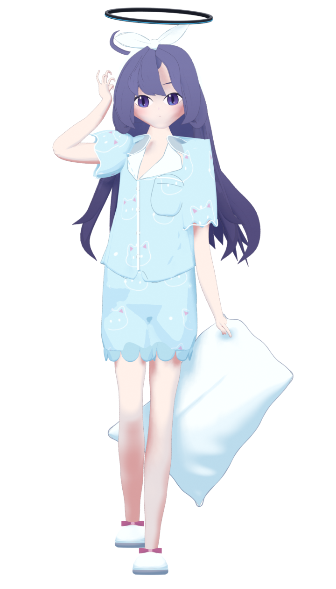
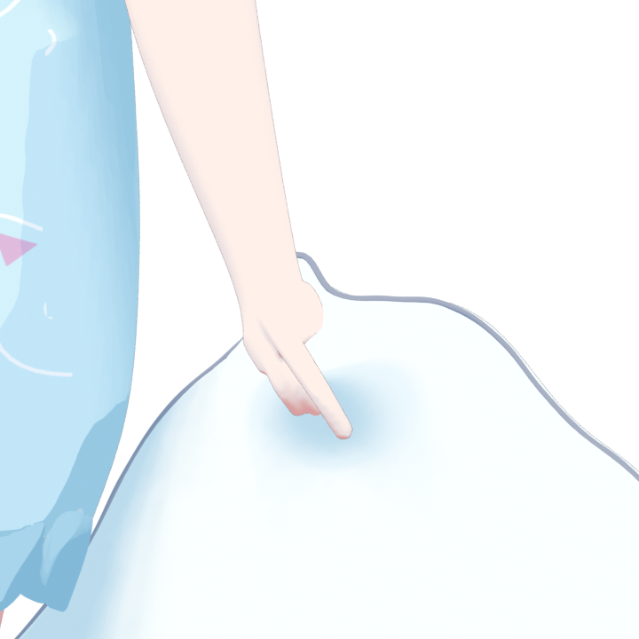
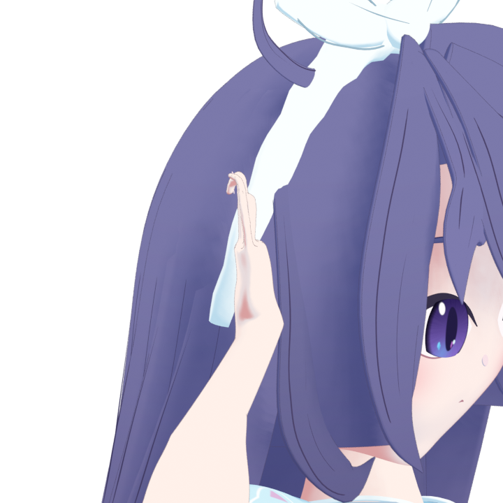
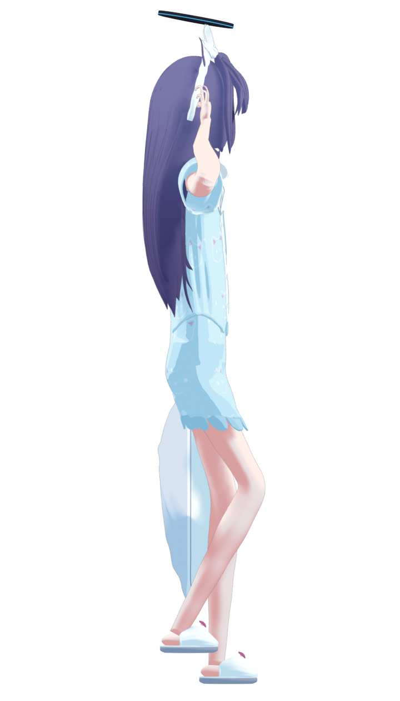

front.png
/home/dev/project/3d/gpt6-astra-pro_mcp-colabdev_blender_moonlit-pajamas/renders/review/R30-front.png94/100 · Subjective visual review. Only actual retained renders are shown.

/home/dev/project/3d/gpt6-astra-pro_mcp-colabdev_blender_moonlit-pajamas/renders/review/R30-front.png
/home/dev/project/3d/gpt6-astra-pro_mcp-colabdev_blender_moonlit-pajamas/renders/review/R30-grip.png
/home/dev/project/3d/gpt6-astra-pro_mcp-colabdev_blender_moonlit-pajamas/renders/review/R30-hand_side.png
/home/dev/project/3d/gpt6-astra-pro_mcp-colabdev_blender_moonlit-pajamas/renders/review/R30-left.png